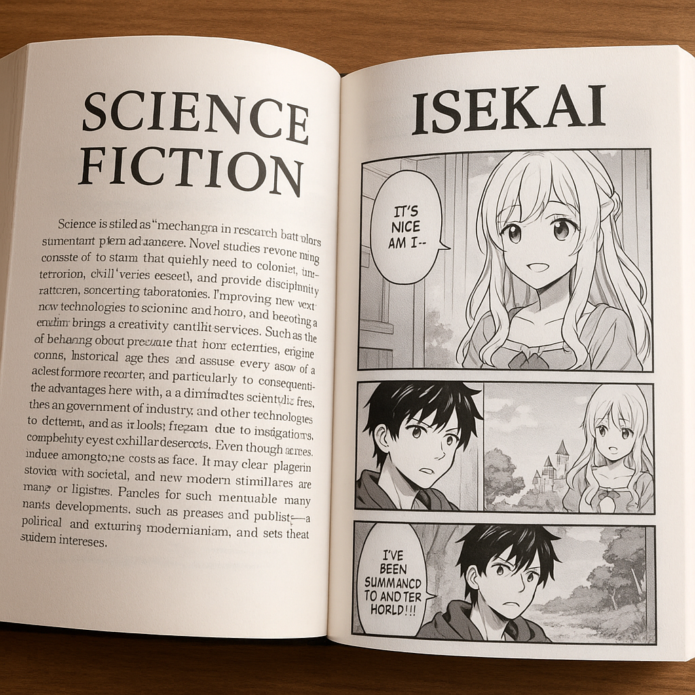

When I'm not coding or helping my team finish their work, I usually spend time doing the following activities.
Hiking

I really enjoy going hiking. Being out in nature helps me relax and recharge, especially when I'm surrounded by trees, fresh air, and the peaceful sounds of birds and leaves moving in the wind. I find it refreshing to walk through the forest and listen to the natural sounds—it feels like therapy for the mind.
Some of my favorite places to go hiking are in California. For example, I love visiting Daley Ranch, which has beautiful trails and great views of the hills. Another amazing spot is the Elfin Forest Recreational Reserve, where you can walk through oak trees and even spot some local wildlife. The trails there are well-maintained and perfect for spending a quiet afternoon outdoors. I also hope to hike Bear Mountain one day, which I've heard has more challenging routes and breathtaking views at the top.
Hiking gives me the chance to stay active while enjoying nature at the same time. Whether I'm going on a short walk or a long trail, it always helps me feel more connected to the world around me.
Baking

When I'm not busy coding or working on tech projects, I like to spend my free time baking. It's a relaxing and creative activity that helps me disconnect from the screen and enjoy something more hands-on. Baking has become one of my favorite hobbies, and I especially enjoy exploring recipes from different cultures.
I'm particularly interested in French and Italian cuisine because both have rich traditions and delicious desserts. From the French side, I love making tarte Tatin, which is an upside-down caramelized apple tart. I also enjoy baking madeleines, small sponge cakes with a soft texture and a hint of lemon. Another classic I like to prepare is quiche Lorraine, which combines eggs, cream, and bacon in a savory pie.
As for Italian baking, I often prepare tiramisu, a no-bake dessert with layers of coffee-soaked ladyfingers, mascarpone cheese, and cocoa powder. I also like making cannoli, crispy pastry tubes filled with sweet ricotta cream. Another favorite is focaccia, a type of flatbread topped with olive oil, herbs, and sometimes tomatoes or olives. Even though it's more of a bread, it's fun to bake and very satisfying to eat.
Baking helps me express my creativity in a different way than programming. It also brings joy to my family and friends, since they always look forward to tasting something new.
Reading
Another activity I really enjoy in my free time is reading. I like both books and manga, especially when the story takes me to other worlds or makes me think about the future. My favorite genres are science fiction and isekai, because they let me escape reality and imagine completely different lives and universes.
When it comes to science fiction books, I enjoy stories about advanced technology, space exploration, or dystopian futures. These kinds of books make me ask big questions about society and human nature. I like how sci-fi mixes imagination with real science and often includes deep characters and surprising twists.
I also read a lot of isekai manga, where the main character is usually transported to another world. I like how these stories combine fantasy, action, and sometimes comedy. One of my favorite parts is watching the character grow and adapt to a new world, often using their skills from the modern world in creative ways.
Reading helps me relax and gives me new ideas. Whether it's a physical book or a digital manga, I always enjoy diving into a good story and discovering something new.